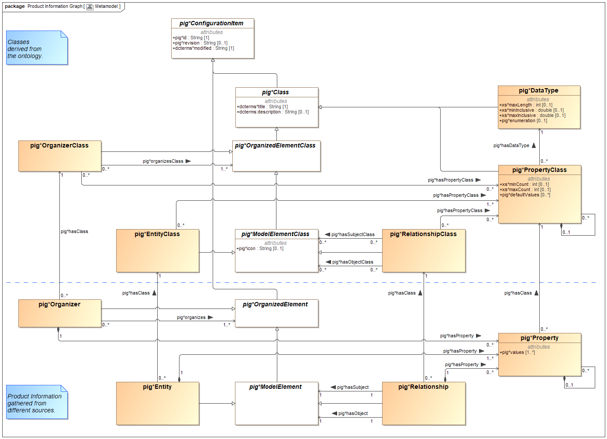

Model
▣ Metamodel
The metamodel defines both the classes (top) and their instances (bottom) for building a product information graph (pig):
- pig:EntityClass and pig:Entity are used for model elements, such as a system component or a requirement.
- pig:RelationshipClass and pig:Relationship are used for relations between entities, such as a 'system component satisfies a requirement'. A relationship class may define the classes of entities or relationships, whose instances are eligible as subject or object in a relationship.
- pig:OrganizerClass and pig:Organizer are used for diagrams, chapters, folders or similar with links to any pig:OrganizedElement, which is an entity, relationship or organizer. An organizer class may define the classes of entities, relationships or organizers, whose instances are eligible to be linked (i.e. organized).
- pig:DataType may be any of the data types known from XML or a specialization. In case of a specialization some parameters define the value range, such as minimum and maximum value of a number, the accuracy of a real number, a string length or a set of enumerated values.
- Every pig:EntityClass and pig:RelationshipClass can have an individual set of pig:PropertyClasses, each of which is uniquely defined by a data type. For example, a requirement might have three property classes, such as a „Title“ with data type „String of max. length 96“, a „Description“ with data type „String of max. length 8192“ and a „Priority“ with data type „String with a single choice of ['(1) high', '(2) medium', '(3) low']“.
- pig:Entity or pig:Relationship is an instance of a pig:EntityClass or pig:RelationshipClass respectively. Each instance usually has a set of pig:Property corresponding with the pig:PropertyClasses of its class.
Note: The prefixes 'pig*', 'xs*' and 'dcterms*' designate namespaces. In other technical environments such as RDF, XML and JSON, a namespace would be separated with ':' more appropriately, which may lead to confusion in UML. The separator may be replaced during transformation.

Model Elements (Glossary)
○ dcterms:description
○ dcterms:modified
○ dcterms:title
☆ pig:Class
An abstract superclass of all data types and all classes for organizers, entities, relationships as well as properties.
Details:
- dcterms:title is the name of the class, most often an ontology term for entity classes resp. relationship classes.
- dcterms:description is the definition of the ontology term
- The class is abstract.
- All attributes are inherited by its subclasses.
☆ pig:ConfigurationItem
All specializations are identifiable and under revision control.
Details:
- The class is abstract.
- All attributes are inherited by its subclasses.
☆ pig:DataType
pig:DataType may be any of the data types known from XML or a specialization. In case of a specialization some parameters define the value range, such as minimum and maximum value of a number, the accuracy of a real number, a string length or a set of enumerated values.
Details:
- a specialized data type must have a title named dcterms:title and may have a description named dcterms:description.
- According to the fundamental XML data type, constraining facets may be defined such as maxLength of a string or minInclusive and maxInclusive of a number.
- A list of enumerated values may be given.
○ pig:defaultValues
Optional default value(s) in case a modelElement's property does not have an individual value. It is a list of multiple values, if maxCount is undefined or >1, or a single value otherwise.
Here, the attribute is called 'defaultValue' for clarity and may just be called 'values' in an implementation, as all restrictions and operations of a property's values apply.
☆ pig:Entity
pig:Entity is used for model elements, such as a system component or a requirement.
Details:
- An entity must have at least one property as properties are the only payload an entity can carry.
- The entity's class lists the classes of properties it may have.
- The definitions of the entity class together with those of the property classes may be used to build user dialogs and to check its instances whether all properties have a correct type and value range as well as whether all required ones are present.
☆ pig:EntityClass
pig:EntityClass is used for types of model elements, such as a system component or a requirement.
Details:
- An entity class must have a title (name) and may have a description (definition).
- An entity class lists one to many classes of properties its instances may have.
- The definitions of the entity class together with those of the property classes may be used to build user dialogs and to check its instances whether all properties have a correct type and value range as well as whether all required ones are present.
○ pig:enumeration
○ pig:icon
○ pig:id
☆ pig:ModelElement
An abstract superclass of pig:Entity (graph node) and pig:Relationship (graph edge).
Details:
☆ pig:ModelElementClass
An abstract superclass of pig:EntityClass (type of graph node) and pig:RelationshipClass (type of graph edge).
Details:
- The class is abstract.
- All attributes and associations are inherited by its subclasses.
☆ pig:OrganizedElement
☆ pig:OrganizedElementClass
An abstract superclass of pig:EntityClass (type of graph node), pig:RelationshipClass (type of graph edge) and pig:OrganizerClass (type of diagrams, folders etc.). Any of those classes may be selected by a pig:OrganizerClass to restrict the type of pig:OrganizedElements. Thus, a folder class may be defined allowing its instances to contain activity diagrams and activities, but not any other.
Details:
- The class is abstract.
- All attributes and associations are inherited by its subclasses.
☆ pig:Organizer
pig:Organizer is used for diagrams, chapters, folders and similar with links to any pig:OrganizedElement, which is an entity, relationship or organizer. An organizer class may define the classes of entities, relationships or organizers, whose instances are eligible to be linked (i.e. organized).
Details:
- An organizer must have at least one link to an entity, relationship or organizer with a class defined in its pig:OrganizerClass. If none is defined, all entities, relationships and organizers are eligible.
- A organizer may have zero to many properties as defined in its class.
- The definitions of the organizer class together with those of the property classes may be used to build user dialogs and to check its instances whether all properties have a correct type and value range as well as whether all required ones are present.
☆ pig:OrganizerClass
pig:OrganizerClass is used for types of diagrams, chapters, folders and similar with links to any pig:OrganizedElement, which is an entity, relationship or organizer.
Details:
- An organizer class must have a title (name) and may have a description (definition).
- An organizer class lists one to many classes of properties its instances may have.
- An organizer class may define the classes of entities, relationships or organizers, whose instances are eligible to be linked (i.e. organized). If none are defined, all entities, relationships and organizers are eligible.
- The definitions of the organizer class together with those of the property classes may be used to build user dialogs and to check its instances whether all properties have a correct type and value range as well as whether all required ones are present.
☆ pig:Property
Each property belongs to a single entity or relationship, wheras
- an entity may have 1 to many properties and
- a relationship may have 0 to many properties.
Details:
- A property must have one to many values according to the constraints of its property class and data type.
- A property without value is omitted as a whole, as there is no need of a place-holder.
- A property may be composed of multiple properties to form a structured data set according to its property class.
☆ pig:PropertyClass
Every pig:EntityClass, pig:RelationshipClass and pig:OrganizerClass can have an individual set of pig:PropertyClasses, each of which is uniquely defined by a data type. For example, a requirement might have three pig:PropertyClasses, such as a „Title“ with data type „String of max. length 96“, a „Description“ with data type „String of max. length 8192“ and a „Priority“ with data type „String with a single choice of ['(1) high', '(2) medium', '(3) low']“.
Details:
- A property class must have a title named dcterms:title and may have a description named dcterms:description.
- A property class may define a minimum and maximum count of values.
- A property class may define default value(s) which must of course satisfy its own constraints and those of its data type.
- A property class may be composed of multiple property classes to form a structured data type (xs:complexType). The structure must be a tree, i.e without cyclic dependency.
☆ pig:Relationship
pig:Relationship is used for relations between entities, such as a 'system component satisfies a requirement'. All relationships are bilateral and directed. This allows for assertions according to propositional logic. They can be easily mapped to many technologies such as RDF or ReqIF.
Details:
- A relationship must have exactly one subject and object each. Subject and object must be an entity or relationship with a class defined in its pig:RelationshipClass. If none is defined, all entities and relationships are eligible.
- A relationship may have zero to many properties as defined in its class.
- The definitions of the relationship class together with those of the property classes may be used to build user dialogs and to check its instances whether all properties have a correct type and value range as well as whether all required ones are present.
☆ pig:RelationshipClass
pig:RelationshipClass is used for types of relations between two entities, such as a 'system component satisfies a requirement'. All relationships are bilateral and directed. This allows for assertions according to propositional logic. They can be easily mapped to many technologies such as RDF or ReqIF.
Details:
- A relationship class must have a title (name) and may have a description (definition).
- A relationship class lists zero to many classes of properties its instances may have.
- A relationship class may define entitiy classes or relationship classes, whose instances are eligible as subject or object in a relationship. If none are defined, all entities and relationships are eligible.
- The definitions of the relationship class together with those of the property classes may be used to build user dialogs and to check its instances whether all properties have a correct type and value range as well as whether all required ones are present.
○ pig:revision
○ pig:values
○ xs:maxCount
○ xs:maxInclusive
○ xs:maxLength
○ xs:minCount
○ xs:minInclusive